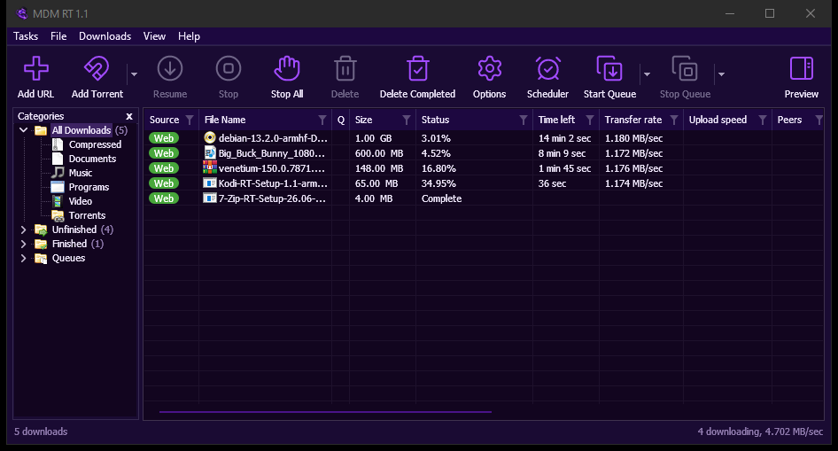
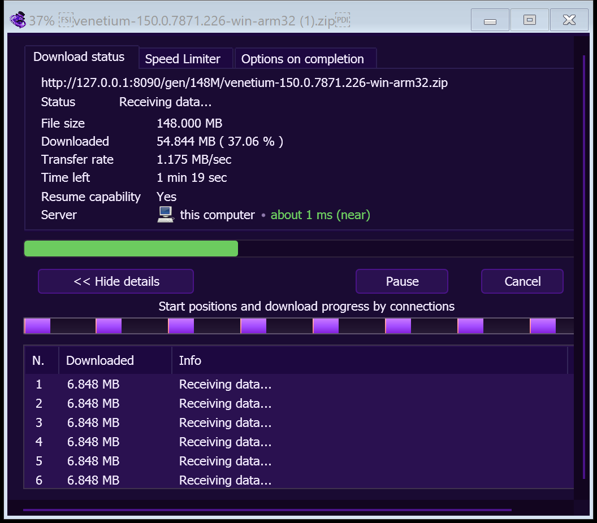
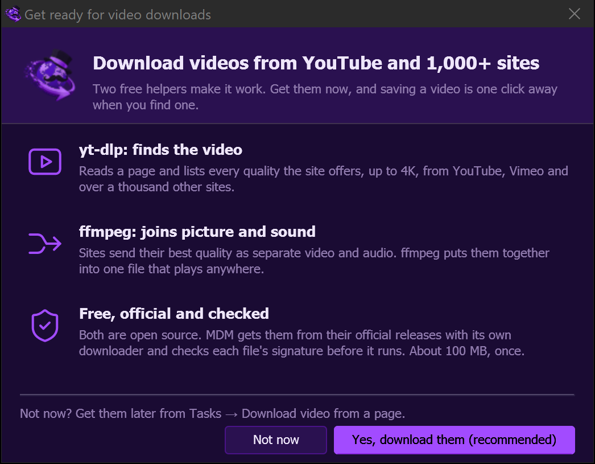
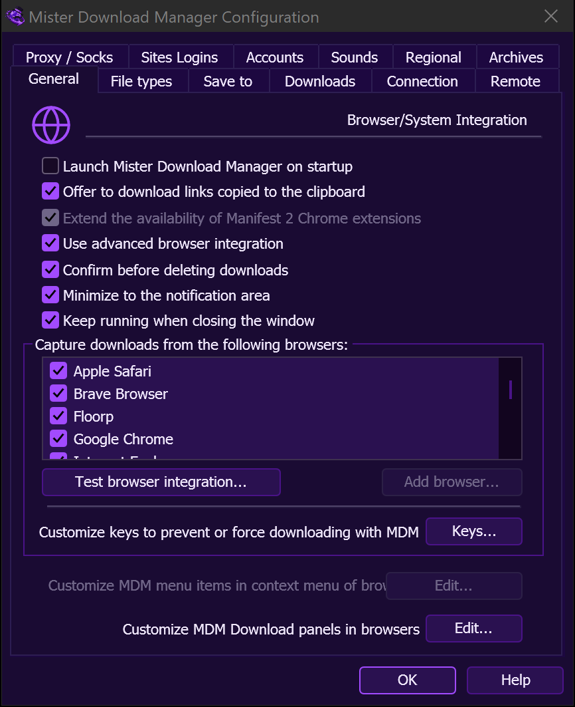
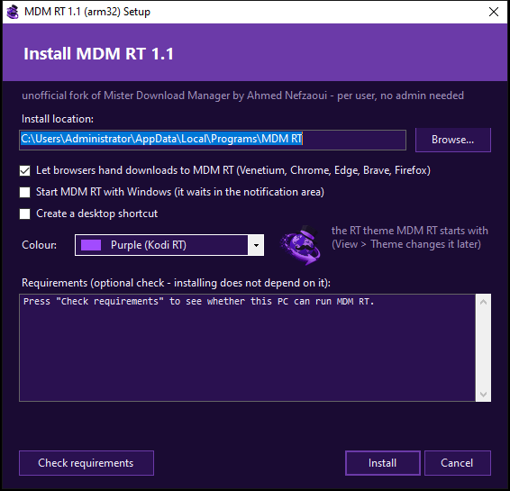

MDM RT 1.1
Mister Download Manager for Surface RT and Surface 2 on Windows RT 8.1 and Windows 10 ARM32, with an x64 build for PCs

Mister Download Manager, in dark
Windows RT 8.1 · Windows 10 ARM32
Thumb-2
native ARM32
ThinLTO
PGO · llvm-rt 2.4
Drawn with OpenGL ES through ANGLE on Direct3D 9 or 11: Venetium's ANGLE.
Built for ARM32

Fast, resumable downloads
Eight RT colours
7-Zip RT's dark look, Kodi RT's purple first. MDM's own themes are all there too.
Kodi RT purple, or another colour

Videos with yt-dlp
Helpers that run on ARM32
yt-dlp
Python 3.14 (Kodi RT)
QuickJS for YouTube
ffmpeg
All in the Setup: nothing x86 is downloaded.
Video downloads on the tablet
The browser extension
Venetium
Chrome
Edge
Brave
Firefox
The Chrome Web Store extension hands downloads to MDM RT; Setup registers its host.
Catches downloads in Venetium

All of MDM's options

Per-user Setup, no admin
A fork of Mister Download Manager
1f241ae4
+ 10 commits
arm32
·
x64
Surface RT, Surface 2 · 64-bit Windows
GNU GPL v3 or later, as upstream.
A real fork, on GitHub
Free and open source
●
github.com/hamed7ir/mdm-rt